Flag of the Philippines
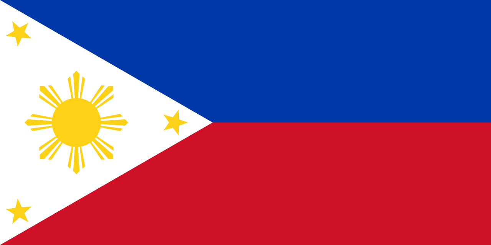
A horizontal bicolour of blue and red; with a white equilateral triangle based at the hoist containing three, 5-pointed gold stars at its vertices, and an 8-rayed gold sun at its center.
Symbolism [1] [2]
On March 25, 1936, then President Manuel L. Quezon issued E.O. No. 23 prescribing the technical description and specification of the Filipino Flag. It was followed by other directives assigning the National Historical Institute as the authority in Philippine Vexillaries and Heraldry.
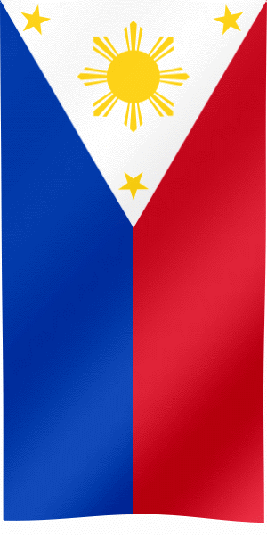
- The white triangle with equal sides of the flag is symbolic of equality among men.
- The sun represents the gigantic strides that have been made by the Sons of this land on the road to progress and civilization.
- The eight rays of the sun in the triangle represent the first eight united provinces that revolted for our independence against the Spanish rule..
- The three stars in the triangle stand for the three major geographical divisions of the country - Luzon, Visayas and Mindanao.
- The red field symbolizes the willingness of the Filipino people to shed blood in defense of their country.
- The blue field stands for common unity and the noble aspirations of the Filipino people.
- The white field stands for purity.
The eight rays on the flag represent the eight original provinces: Batangas, Bulacan, Cavite, Laguna, Manila, Nueva Ecija, Pampanga, and Tarlac. All of these provinces still exist today except for one: Manila lost its status as a province, even though it still exists as the independent city that people know as the capital of the Philippines. Much of the former province of Manila (capital: Mariquina, present-day Marikina City) became part of the District of Morong (which became the province of Rizal in 1901 under the American colonial administration). This may be the reason why many sources, especially in the Philippines, replace 'Manila' with 'Rizal' or even 'Morong' in the list.
- white equilateral triangle = liberty, equality, and fraternity
- horizontal blue stripe = peace, truth, and justice
- horizontal red stripe = patriotism and valor
- golden sun = unity, freedom, people's democracy, and sovereignty
- 8 rays = 8 provinces with significant involvement in the 1896 Philippine Revolution against Spain
- 3 five-pointed stars = Luzon, Visayas and Mindanao
Construction [3]
The flag's length is twice its width, giving it an aspect ratio of 1:2. The length of all the sides of the white triangle are equal to the width of the flag. Each star is oriented in such manner that one of its tips points towards the vertex at which it is located. Moreover, the gap-angle between two neighbours of the 8 ray-bundles is as large as the angle of one ray-bundle (so 22.5°), with each major ray having double the thickness of its two minor rays. The golden sun is not exactly in the center of the triangle but shifted slightly to the right.
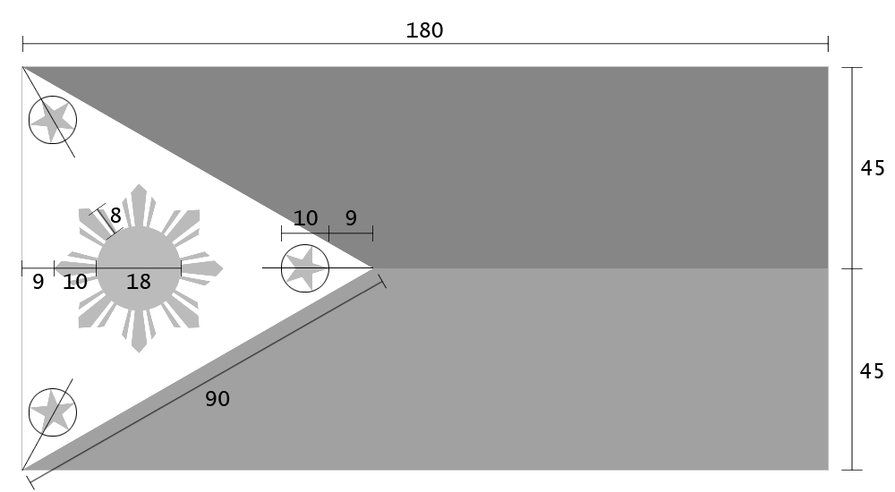
Colors [4]
The flag's colors are specified by Republic Act 8491 in terms of their cable number in the system developed by the Color Association of the United States. The official colors and their approximations in other color spaces are listed below:
| Scheme | Blue | Red | White | Yellow |
|---|---|---|---|---|
| Cable No. | 80173 | 80108 | 80001 | 80068 |
| Pantone | 286 | 186 | n/a | 116 |
| RGB | 0-56-168 | 206-17-38 | 255-255-255 | 252-209-22 |
| CMYK | C100-M60-Y0-K5 | C0-M90-Y65-K10 | n/a | C0-M18-Y85-K0 |
| HEX | #0038A8 | #CE1126 | #FFFFFF | #FCD116 |
Origin [5]
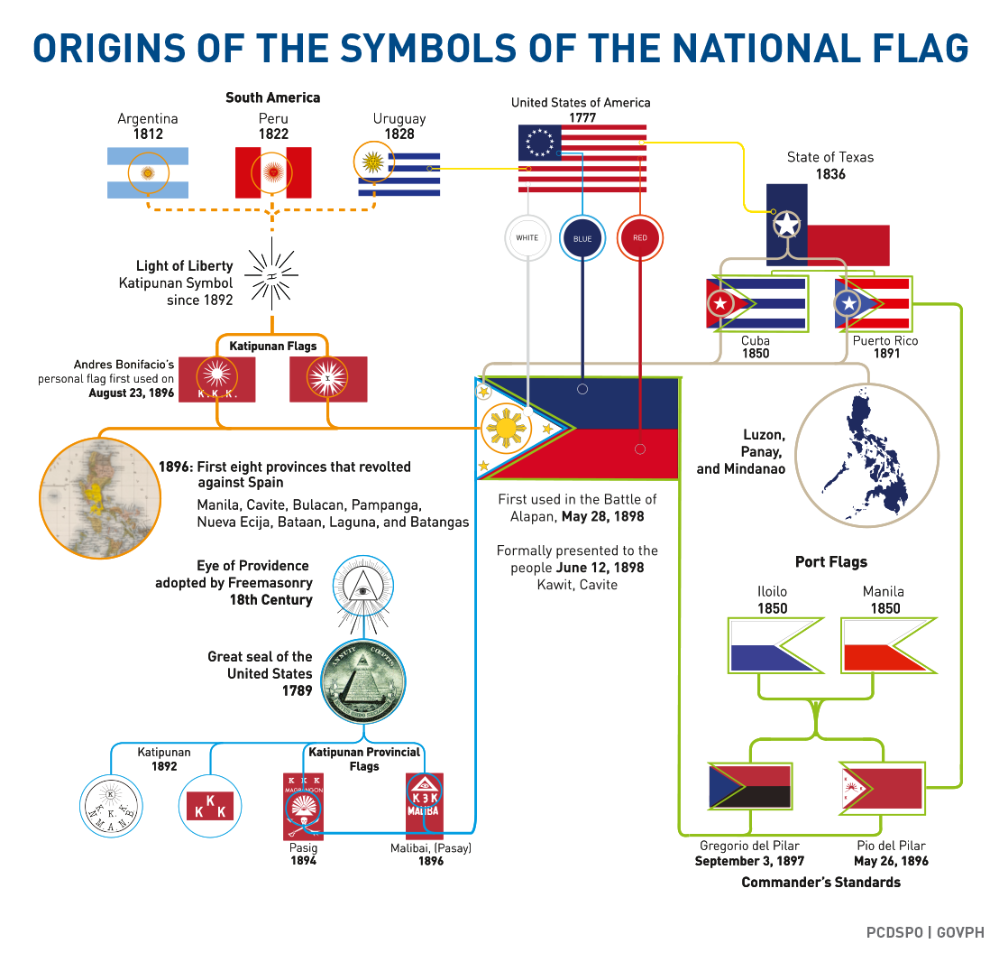
History [6]
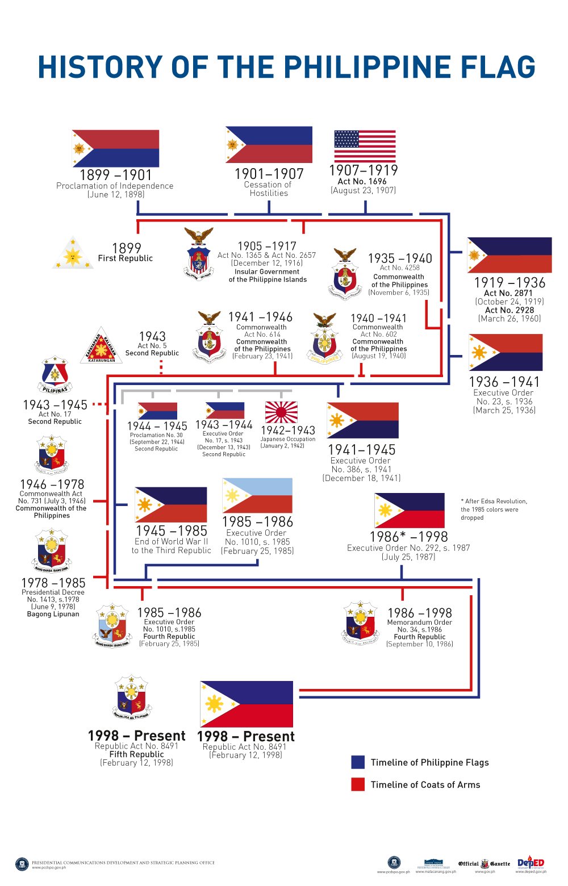
Evolution [7]
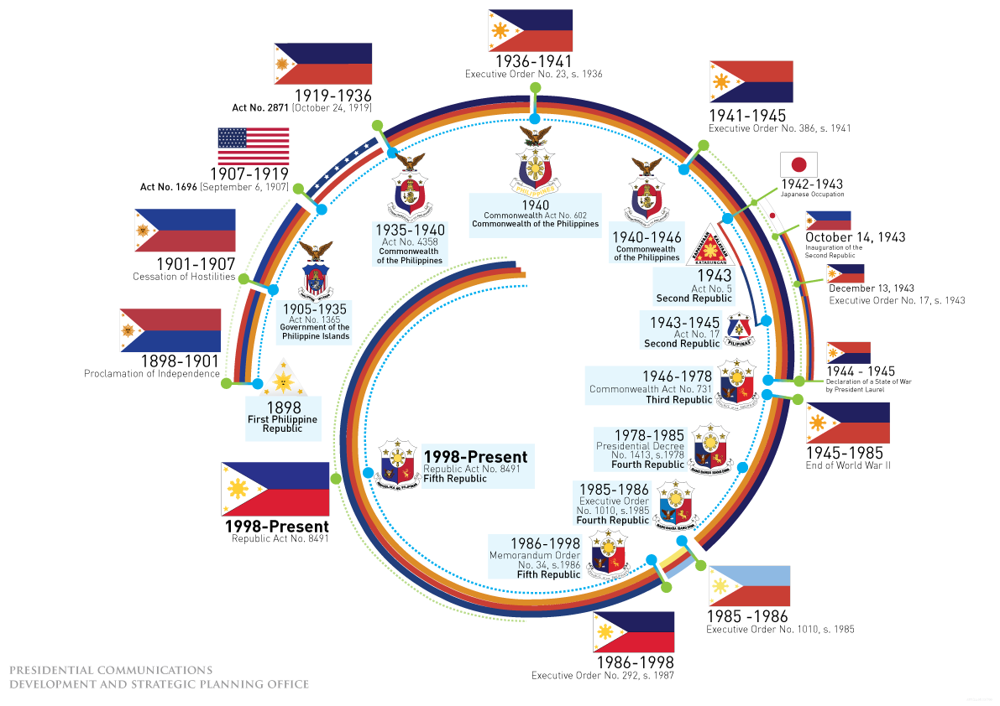
Display in times of peace or war [8]
The flag has the unique ability to display a state of war of the country. It does this according to the orientation of the blue and red panels: if the blue panel is above the red, the Philippines is at peace, if the red above blue indicates a state of war. In the vertical position, blue on the right means war and opposite means otherwise.
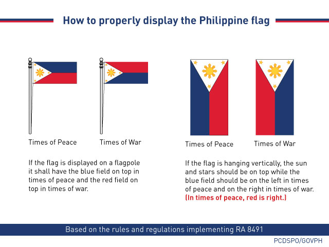
Display on buildings [9]
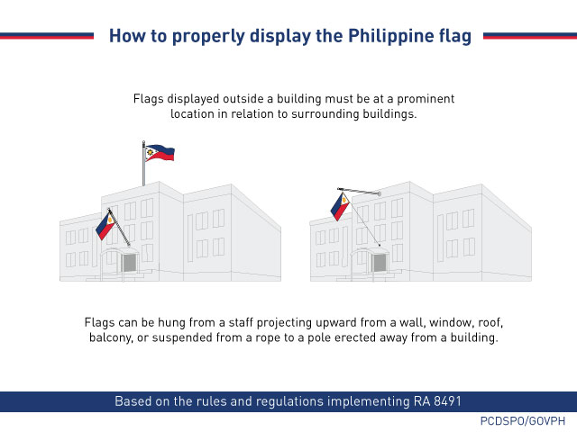
Flag raising & lowering [10]
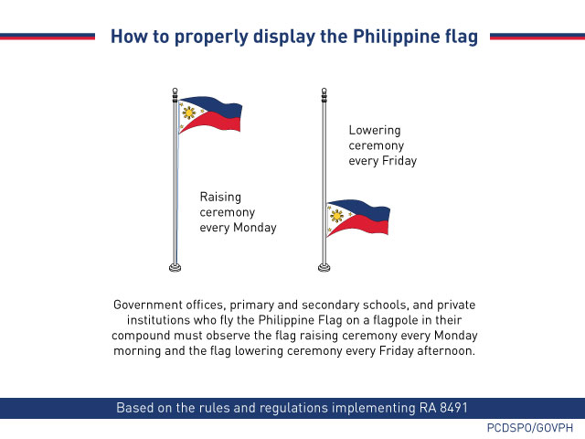
Flag folding [11]
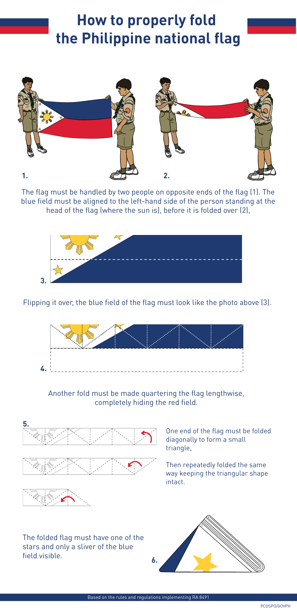
References
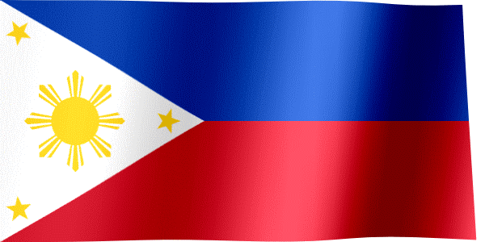
- ^ Symbolism. https://fotw.info/flags/ph.html#exp
- ^ Symbolism. https://en.wikipedia.org/wiki/Flag_of_the_Philippines#Symbolism
- ^ Construction. https://en.wikipedia.org/wiki/Flag_of_the_Philippines#Construction
- ^ Colors. https://en.wikipedia.org/wiki/Flag_of_the_Philippines#Color
- ^ Origin. http://malacanang.gov.ph/3846-origin-of-the-symbols-of-our-national-flag/
- ^ History. http://malacanang.gov.ph/history-of-the-philippine-flag/
- ^ Evolution. https://www.officialgazette.gov.ph/the-philippine-flag/
- ^ Display in times of peace or war. Ibid.
- ^ Display on buildings. Ibid.
- ^ Flag raising & lowering. Ibid.
- ^ Flag folding. Ibid.